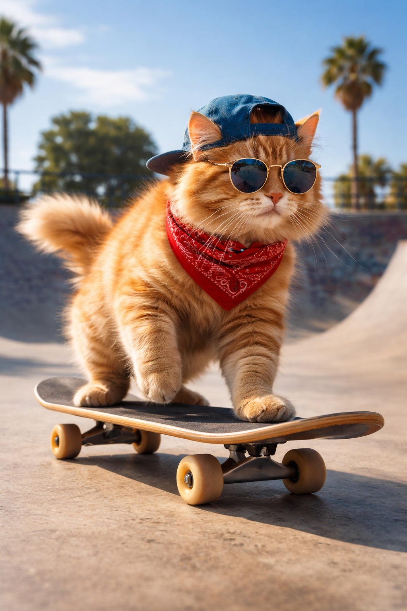
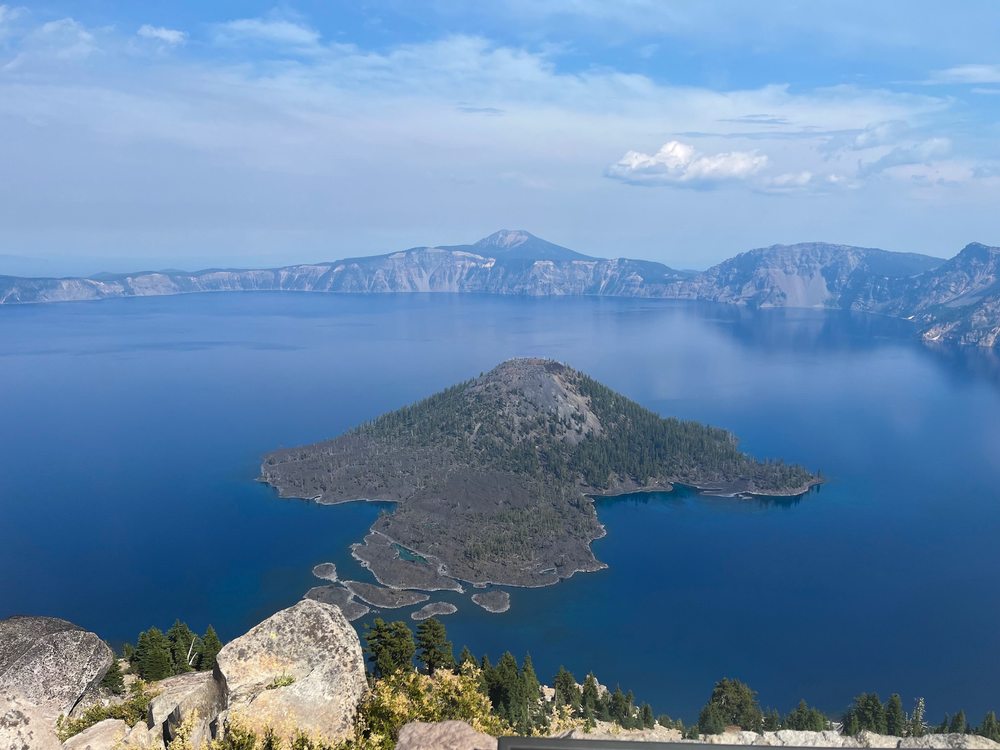
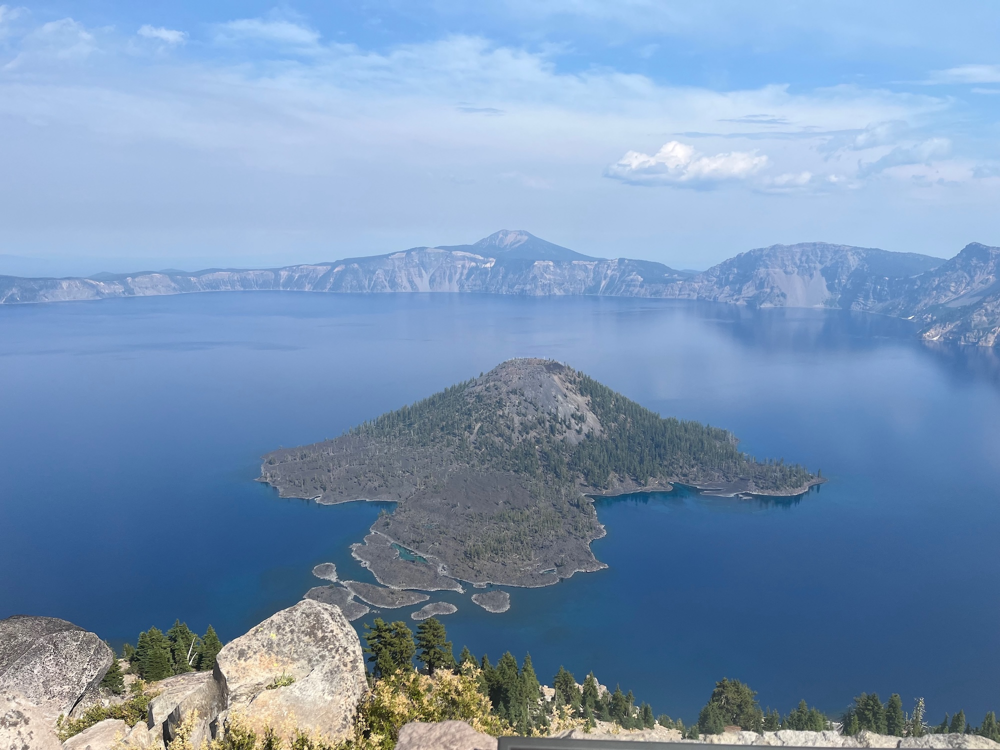

Signer: OpenAI
PNG. OpenAI signer, trainedAlgorithmicMedia. Upstream reports Invalid, and the single failure is signingCredential.untrusted; our build bundles an AI trust list containing OpenAI, so a trusted verdict here is a configuration difference, not a disagreement.

Signer: Adobe Inc.
Adobe Firefly. c2pa.created with digitalSourceType trainedAlgorithmicMedia. The cleanest AI-image case in the corpus. Expect the AI label to fire on the CONTENT claim, not on the signer.

Signer: Adobe Inc.
Photoshop 26.11.0. Actions: opened, cropped, resized. Valid upstream. Must NOT show an AI label.

Signer: Adobe Inc.
Signed c2pa.soft-binding (com.adobe.trustmark.P) plus a dense watermark, cawg.identity, and training-mining set to notAllowed. Expect pillar P2 to light and a live manifest-store probe for P3.

Signer: (sidecar only)
Lightroom export with a sidecar manifest but ZERO embedded JUMBF in the bytes. Expect no Content Credentials. This is upstream's state, not a truncated download.

Signer: none
Unsigned original. Negative control. Must show no Content Credentials and no AI label.